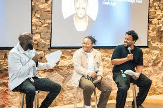

Networking helps students build professional connections, learn from mentors, and discover career opportunities. Strong relationships can open doors to growth and success.
Networking allows you to meet professionals, exchange ideas, and gain insights about different industries. It helps you grow beyond classroom learning and discover opportunities you might not find on your own. Many careers are built on relationships as much as skills, and networking helps you build those connections. It can open doors to internships, mentorships, and future job opportunities.
Building connections does not mean asking for favors right away. It is about learning from others, sharing knowledge, and creating professional relationships over time. Even small conversations can lead to meaningful opportunities.
Local events where students can meet professionals and learn about careers.
Use professional platforms to connect with mentors and industry experts.
Join communities focused on learning and professional growth.
Meet professionals and students in different industries.
March 20, 2026Learn how to create a strong professional online presence.
April 5, 2026
Professionals share insights about working in the tech industry.
April 18, 2026Focus on building real relationships instead of just asking for favors.
Send a short message after meetings to keep connections alive.
Show interest by learning from others' experiences.
Engage in communities and events regularly.